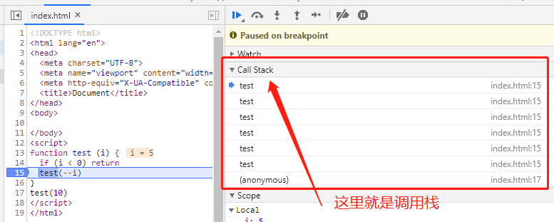
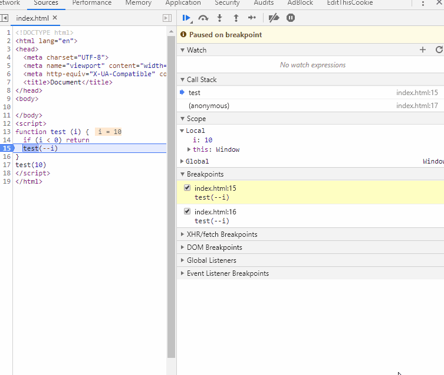

js递归优化原文出处:本文由博客园博主Mr.苏提供。
原文连接:https://www.cnblogs.com/suyuanli/p/12008109.html
递归优化
递归在我们平时撸码中会经常用到，不过可能很多人不知道递归的弊端，就是会导致调用栈越来越深。如果没有节制的使用递归可能会导致调用栈溢出。
- 那什么是递归呢？
递归调用是一种特殊的嵌套调用，是某个函数调用自己或者是调用其他函数后再次调用自己的，只要函数之间互相调用能产生循环的则一定是递归调用，递归调用一种解决方案，一种是逻辑思想，将一个大工作分为逐渐减小的小工作，比如说一个和尚要搬50块石头，他想，只要先搬走49块，那剩下的一块就能搬完了，然后考虑那49块，只要先搬走48块，那剩下的一块就能搬完了，递归是一种思想，只不过在程序中，就是依靠函数嵌套这个特性来实现了。
- 那什么又是调用栈呢？
下面的是我写的一个简单的递归调用，通过断点我们可以看到每执行一个test函数，调用栈就会多一个test函数。
当我们执行到i=0的时候，这个时候调用栈是最深的有11个test函数，之后又会逐个移除test函数，可以看图二的动图，可以看出调用栈是先进后出的
function test (i) {
if (i < 0) return
test(--i)
}
// 这个会调用自身11次
test(10)
图1：

图2：

那怎么对递归进行优化呢，既能起到递归的作用又不会加深调用栈
这里会用到while循环的思想，调用栈之所以会加深主要是因为方法内调用方法，必须等待方法执行完成这个任务才算是真正的结束，就像A同学有个任务1，这个任务是让B同学完成任务2，在B同学没有完成之前，A同学一直处理工作状态。
那while循环是什么原理呢，可以理解为将有调用关系的方法平铺为同一级别。这需要引入额外的方法来做调度，本来test方法需要调用自己10次的，现在用方法b通过标记的方法来决定是否需要调用test方法
- 下面的的例子就是实现递归优化的实现方法（这里复制于阮一峰的es6教程）
- 利用闭包将f方法保留（这里的f方法就是我们需要递归调用的方法）
- 创建value、active、accumulated三个变量，并利用了闭包原理避免被垃圾回收
- accumulated是保存每次f方法调用后需要传入f的新的形参，active是标记f方法是否执行到了最后一次循环，value是记录需要返回的值
- 下面的因为tco会return一个新的函数accumulator，所以sum=accumulator，然后再accumulator内只要accumulated长度不为0，while就会一直执行，每次执行sum方法就会accumulated.push(arguments)方法，这样accumulated长度就不会为0。所以只要f.apply(this, accumulated.shift())执行的时候一旦不调用sum(x + 1, y - 1)方法，accumulated就不会有push操作，这时while就会停止。然后就是active，我们看到if (!active) {...}这个操作，这里保证了只有第一次调用accumulator方法时会进入while循环，剩下的只是起到accumulated.push(arguments)的作用。直到while循环停止，return出来的就是经过n次调用f方法后返回的值了。
- 这样就可以把一个递归调用转换为while循环实现了
function tco(f) {
var value;
var active = false;
var accumulated = [];
return function accumulator() {
// 这里accumulated将形参入栈
accumulated.push(arguments);
// 这里保证只有第一次调用才会进入
if (!active) {
active = true;
while (accumulated.length) {
value = f.apply(this, accumulated.shift());
}
active = false;
return value;
}
};
}
var sum = tco(function(x, y) {
if (y > 0) {
return sum(x + 1, y - 1)
}
else {
return x
}
});
sum(1, 100000)
这里可能会有点难理解，可以多试几次，打断点看看控制台的调用栈。相信还是可以看出其中的原理的